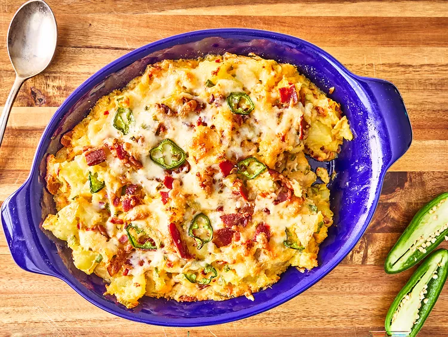

Home
Recipe for Jalapeno Popper Potatoes

Description :
These jalapeno popper potatoes are mashed potatoes baked with pepper Jack cheese, bacon, and jalapenos, for a spicy, rich side dish.
Both the ingredients and procedure are very simple and affordable
Hope you enjoy! Lets us know your feedback...
Ingredients :
- 3 pounds Yukon gold potatoes, cubed
- 8 slices bacon, chopped
- 3 jalapenos, seeded and chopped
- 8 ounces pimento cheese with cream cheese added
- 8 ounces pepper Jack cheese, shredded
- Add salt & pepper to your preference
Steps
- Preheat the oven to 375 degrees F (190 degrees C).
- Bring a large pot of salted water to a boil, then add potatoes and return to a boil. Cook until tender, 12 to 14 minutes. Drain potatoes and add them to a large bowl.
- Meanwhile, cook bacon until crisp in a large skillet, drain, and set aside. Reserve drippings in pan.
- Add jalapenos to drippings, and cook, stirring constantly until softened, about 2 minutes. Add jalapenos to potatoes.
- Add in reserved bacon, pimento cheese, 1 1/2 cups pepper Jack cheese, and salt. Stir to combine. Transfer mixture to a casserole dish and top with remaining cheese.
- Bake in the preheated oven until browned and bubbly, about 20 minutes.